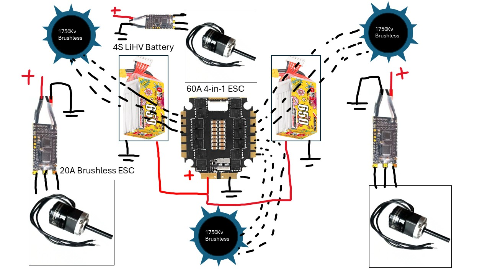

Spinny Boi 3001
3lb Ring Spinner

Project Overview
This is the second version of our robot, where we made some big improvements based on what we learned from the first design.
The outer ring is now made from two thick aluminum halves, giving it better durability and balance. We also upgraded the shuffler system for smoother movement, and the inner gear ring is now fully enclosed within the blade for added protection.
Improvements from V1
- Replaced mild steel sandwich with two solid aluminum rings
- Upgraded shuffler system for durability, metal feet inserts cannot fall out now, as they go around the cam
- Fully enclosed inner gear ring for better protection
- Improved bearing stack for less friction
- Improved wiring management (still needs help)
Ring Manufacturing
Cad mockup:

Before machining, 6061 aluminum ring cut with waterjet. This provides the bulk of the spinning mass. Hardened steel insert added later.

Machining to add extra features:

In addition to the aluminum, a S7 hardened steel impactor is slotted into the edge during assembly, as well as a counterweight on the other side. Mounting for these in the aluminum was a failure point later on.
Shuffler
We used a cam system to move the shuffler. The cam is made from 6061 aluminum, and the shuffler housing is made from 3D printed nylon.
The feet themselves are waterjet from titanium, as that's what we had available in the correct thickness. Spring steel is preferred because it's harder.

Notice the cam, there are 4 of these, each with two feet attached. One faces up and the other down so we can handle being upside down.
The slot on the top of the feet interacts with a rod, constraining the feet into their elliptical motion.

Another angle:

Electrical
The robot runs on a 4s LIHV battery, fully charged it runs at 17ish volts. 3x weapon motors driven by 60A 4-in-1 esc (hard to find). We only use 3 channels for the 3 motors.
3x brushless geared drive motors come from Repeat Robotics. More on issues with those later.
Uses FRsky RC protocol due to its connectivity to the Q X7 transceiver. This fancy remote allows for more mixing than a traditional Flysky. Maths for vectoring explained later.
In the future, a PCB would be helpful for wire management.
Wiring Diagram
Motors going in:

Basically everything else:

NHRL April 5th
Player card
First matchup against a beater-bar type robot called Blunder
We lost this fight, but it was a good learning experience. The robot was not able to spin up to speed, and the shuffler system was not working properly.
Notably, the bearing stackup failed quickly because of a design oversight where two M5 screws met in the middle of the bearing mount, allowing for a weak point where the plastic was all that held the bearings. This allowed for upward loads (like those coming from this beater bar) to break the bearing mount and cause the blade to seize up.

Sorry, no images of the battle yet, will add later.
First actual win against horizontal spinner called Meringue
This was a better matchup for us, since loads weren't side loading the ring bearings. Instead, they are loaded radially like intended for skateboard bearings.
Loss against Scottie's Scrambler
Another beater bar robot, this did not end well once the blade stopped spinning.
Aftermath:


Notes from this fight
- Movement uncontrollable when blade spinning, unbalanced most likely
- Weapon tip nearly separated from ring, bent ring apart stopping rotation
- Shufflers shatter under seemingly little load
Improvements for Next Time
We need to make the bearing stackup more robust, and add a better way to mount the ring. The current method is not strong enough to handle the forces from the beater bar.
We also need to add a better way to manage the wires, as they are currently just hanging out in the open. This is not ideal for a combat robot.
We need to add a better way to mount the shuffler system, as it is currently just pinned in place on the sides. This allows it to take unnecessary forces when it could just be soft mounted instead by floating between the shells.
- Thru bolts or better bearing mounts. Should prevent separation of the bearings
- Durable shufflers, and mounting them better
- Thicker shuffler rod, it got bent in one of the battles
- Battery protection from gear in close proximity. We had an instance of the gear tilting and getting chewed up
- Improved switch placement, caused unnecessary wire lengths and could improve the space management
- Better ring halves attachment. More screws or thicker ones
Design wise, it would be smart to angle the bearings outwards and have them constrain the ring from the inside, allowing for upwards forces to be directed into the proper load direction for these bearings. Alternatively, somehow make the entire blade into a thrust bearing.
Misc Issues
Gear Issues
We encountered issues with the gears on the brushless drive motors. The epoxy used to secure them was faulty, causing the gears to come loose during operation. We applied JB Weld the night before the competition to reinforce the connection.

Final Thoughts
There's a lot of images and stuff left out here, I'm sorry! Our switch to the aluminum ring instead of stacked steel was a good call, and gave the robot the structural support it needed.
I learned a lot about machining, material selection, high power electronics, and control systems from this. There's so much I haven't touched on yet, namely the manner in which we are controlling the three motors to move in the direction of the joystick. Check back later to see if I end up explaining that.